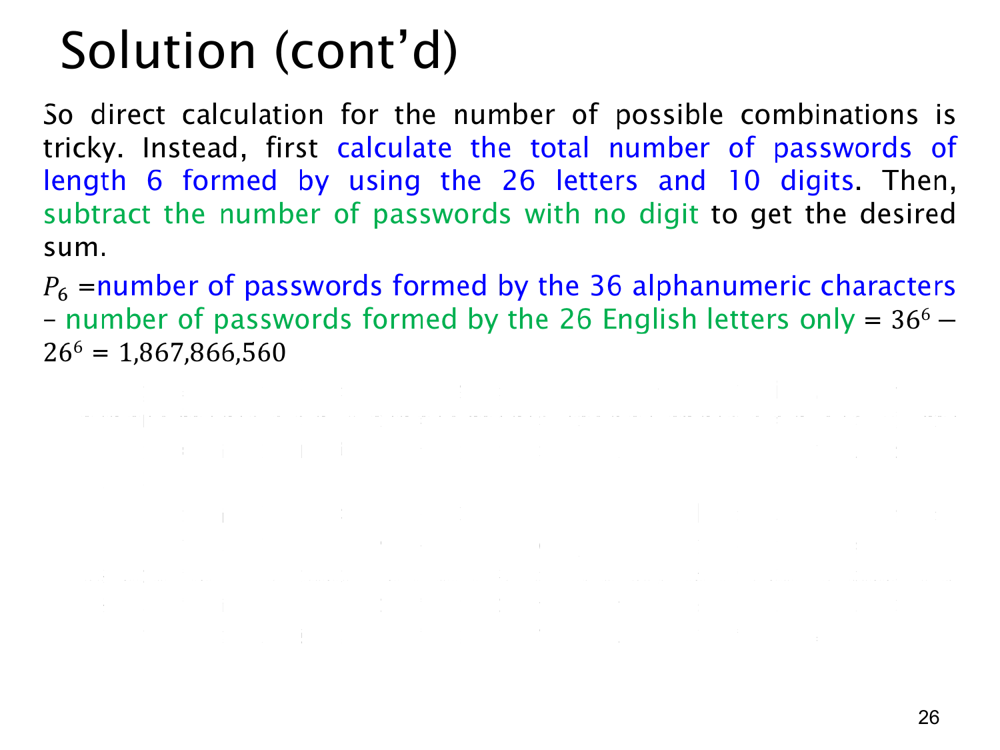

课件第 26 页讲解原文
查看这一页课件

补集法与一个会重复计数的错误解法
对于长度为 6 的密码，每位都可以从 26 个字母和 10 个数字中选，共有 366 个字符串。没有任何数字的字符串，每位只能选字母，共有 266 个。
所有字符串可以分成“没有数字”和“至少一个数字”两类，既无遗漏也不重叠。因此：
P6=366−266=2,176,782,336−308,915,776=1,867,866,560.
课件文字还讨论了一种错误做法：先给一个数字选位置，有 6 种选法；为它选具体数值，有 10 种；剩余五位每位有 36 种选择，于是写成：
6⋅10⋅365.
错误在于，这个方法实际上数的是“一个密码，加上其中一个被指定的数字位置”。对于含多个数字的密码，指定不同位置会产生多条构造过程，但最后得到的是同一个密码。
例如密码 A1B2CD 可以通过“指定第 2 位的 1”得到，也可以通过“指定第 4 位的 2”得到，所以算了两次。一般地，一个含 r 个数字的密码会被这个方法算 r 次。
这还解释了为什么不能简单把错误答案除以一个固定数：有的密码被数一次，有的被数两次，最多被数六次，重复次数并不相同。
还有一个快速检查：6⋅10⋅365=60⋅365，比全部字符串数 366=36⋅365 还大。合法密码是全部字符串的一部分，数量不可能更大，这已经足以判断该式有问题。